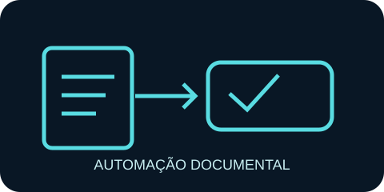
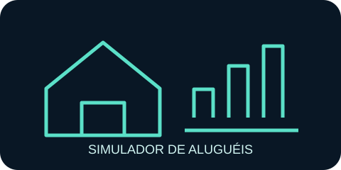

01 ATENDIMENTO
ChefLú
Experiência em automação de atendimento conversacional pelo WhatsApp.
Explorar identidade em 360° ↗Assistir demonstração ↗CONSULTORIA EM INTELIGÊNCIA ARTIFICIAL
Automação, agentes de IA e integrações que transformam processos complexos em operações mais inteligentes.
01 / PROCESSOS CONECTADOS
Conectamos ferramentas e processos com n8n, Python, APIs e webhooks. Cada integração começa com um problema concreto da empresa.
02 / INTELIGÊNCIA OPERACIONAL
Assistentes conversacionais e agentes com regras, limites e supervisão. Tecnologia desenhada para apoiar decisões, atendimento e produtividade.
03 / VISÃO DE NEGÓCIO
Unimos automação e análise de negócios para identificar oportunidades. Projetos técnicos documentados, com atuação voltada ao Brasil e Paraguai.
EVIDÊNCIAS E EXPERIÊNCIAS REAIS
Protótipos, estudos e demonstrações técnicas do portfólio. Sem alegações de resultados financeiros ou implantações comerciais não comprovadas.
Experiência em automação de atendimento conversacional pelo WhatsApp.
Explorar identidade em 360° ↗Assistir demonstração ↗ Ciência de dados
Ciência de dadosSolução de inteligência artificial aplicada ao planejamento agrícola, com simulação de cenários, apoio à decisão e integração de dados.
Conhecer o projeto ↗
Automação de processos financeiros: captura de documentos, validação de dados e aprovação humana.
Ver portfólio detalhado ↗
Simulação imobiliária com parâmetros e análise de cenários.
Consultar projeto ↗
Projeto integrante do portfólio Ekonomática. Detalhes técnicos disponíveis mediante contato; identidade visual provisória.
Conhecer projeto ↗GALERIA 3D INTERATIVA
Objetos tridimensionais conceituais com rotação pelo dedo, acompanhados do estágio real de cada projeto e links para evidências.
MÉTODO E RESPONSABILIDADE
Diagnóstico, requisitos, proposta, desenvolvimento, testes, implantação controlada, documentação e suporte. Conheça também o Projeto-Piloto Empresarial de IA, com escopo, indicadores e critérios de aceitação.
PRÓXIMO PASSO
Conte o desafio da sua empresa. A Ekonomática pode avaliar um caminho de automação, integração ou IA sob medida.
Estudos de caso e demonstrações técnicas não representam implantações comerciais nem resultados financeiros garantidos.